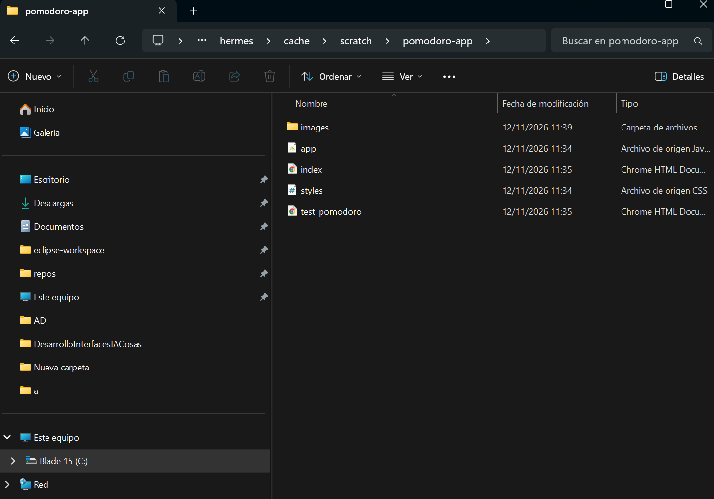
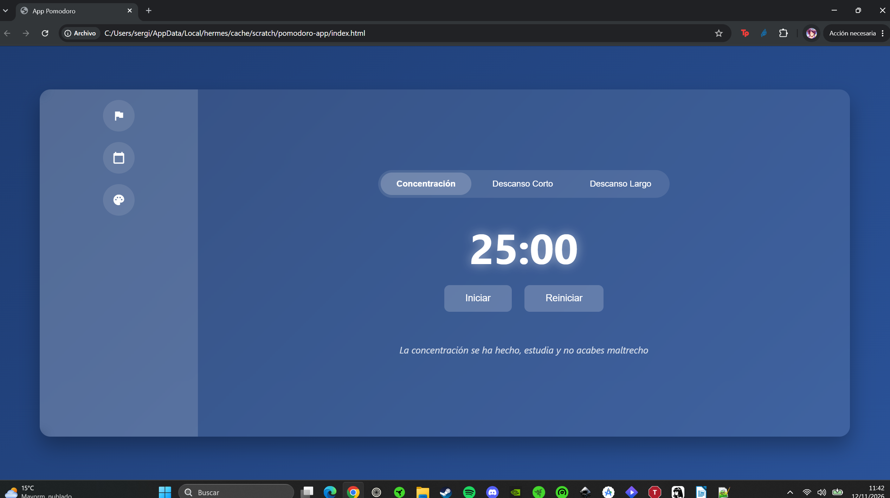

He usado primeramente el siguiente prompt:
Quiero hacer una app web Pomodoro.
La app va a tener un archivo .html, otro .css y otro .js.
El propósito principal de esta app es usar la técnica pomodoro paar gesitonar el tiempo. Para ello, debe tener un temporizador en el centro de la página que por defecto esté en 25 minutos.
Encima de este contador va a haber un segmento de buttons con 3 opciones. A la izquierda del todo "Concentración", que estará puesta por defecto y establece el temporizador en 25 minutos. En el centro "Descanso Corto" que establece el temporizador en 5 minutos y a la derecha del todo "Descanso Largo" que establece el temporizador en 15 minutos.
Cada uno de los 3 botones cambia el "color" de los botones y estilo de la página. Los 2 de descanso serán colores que deriven del azul o el verde y busquen la "calma" mientras que el de Concentración establecerá un color más "agresivo" como el rojo.
Al pulsar cualquiera de estos botones la página saltará un aviso para confirmar que el usuario esté o no seguro de que quiere realizar este cambio.
Debajo del temporizador habrá siempre un mensaje en cursiva que diga <<La concentración se ha hecho, estudia y no acabes maltrecho>>
A la izquierda quiero un FAB menu con diferentes acciones y sus respectivos iconos. La primera una sección de "Desafío". Al pulsar dicha opción aparecerá en el medio de la página un desafío de tiempo total ese día para concentrarse, el usuario podrá aceptar o no.
El segundo icono será una "Racha de días de concentración". Al pulsarlo mostrará un calendario con los minutos totales de concentración que el usuario ha tenido.
El siguiente icono tendrá una sección de "Estética". Al pulsar se mostrará un menú desplegable donde el usuario podrá elegir entre diferentes estéticas. Quiero que haya 4 estéticas, una basada en dungeons and dragons, otra basada en estética manga/anime, otra gótica de temática vampiro y otra de temática cavernícola. Al cambiar en las diferentes secciones cambiará la imágen de fondo de la página en función de la estética pedida.

